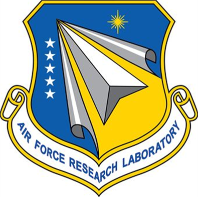

Zhong-Qiu Wang

Hey yo! This is Zhong-Qiu Wang from Chongqing, China, a 3D city famous for its magical landscape, spicy food, and rap music. I am currently a visiting research scientist at Mitsubishi Electric Research Laboratories. My research interests include microphone array processing, speech enhancement, blind source/speaker separation, robust automatic speech recognition, machine learning, and deep learning. I'm a big fan of running and ping-pong. My current half-marathon result is 02:06:29.
Email: wangzhon AT cse.ohio-state.edu wang.zhongqiu41 AT gmail.com
Education
★ Ph.D., Department of Computer Science and Engineering at The Ohio State University, USA, Aug. 2013 ~ May 2020.
★ M.Sc., Department of Computer Science and Engineering at The Ohio State University, USA, Aug. 2013 ~ Aug. 2017.
★ B.Eng., School of Computer Science and Technology at Harbin Institute of Technology, China, Aug. 2009 ~ Jul. 2013.
Experiences
☘ Visiting Research Scientist, Multimedia Group at Mitsubishi Electric Research Laboratories, Jun. 2020 ~ present.
☘ Research Intern, Sound Understanding Team at Google AI Perception, May 2019 ~ Aug. 2019.
☘ Research Intern, Multimedia Group at Mitsubishi Electric Research Laboratories, May 2017 ~ Aug. 2017.
☘ Research Intern, Audio and Acoustics Research Group at Microsoft Research Redmond, May 2016 ~ Aug. 2016.
Selected Publications (Full List)
❋ Z.-Q. Wang, G. Wichern, and J. Le Roux, "On The Compensation Between Magnitude and Phase in Speech Separation", in submission, 2021.
❋ Z.-Q. Wang, P. Wang, and D.L. Wang, "Multi-Microphone Complex Spectral Mapping for Utterance-Wise and Continuous Speech Separation", in IEEE/ACM Transactions on Audio, Speech, and Language Processing (IEEE/ACM T-ASLP), vol. 29, pp. 2001-2014, 2021. [Sound Demo]
❋ Z.-Q. Wang*, P. Wang*, and D.L. Wang, "Complex Spectral Mapping for Single- and Multi-Channel Speech Enhancement and Robust ASR", in IEEE/ACM T-ASLP, vol. 28, pp. 1778-1787, May 2020. [* denotes equal contribution, Sound Demo]
❋ Z.-Q. Wang and D.L. Wang, "Deep Learning Based Target Cancellation for Speech Dereverberation", in IEEE/ACM T-ASLP, vol. 28, pp. 941-950, Dec. 2020.
❋ Z.-Q. Wang, K. Tan, and D.L. Wang, "Deep Learning Based Phase Reconstruction for Speaker Separation: A Trigonometric Perspective", in IEEE International Conference on Acoustics, Speech and Signal Processing (ICASSP), pp. 71-75, 2019.
❋ Z.-Q. Wang and D.L. Wang, "Combining Spectral and Spatial Features for Deep Learning Based Blind Speaker Separation", in IEEE/ACM T-ASLP, vol. 27, pp. 457-468, Feb. 2019.
❋ Z.-Q. Wang, X. Zhang, and D.L. Wang, "Robust Speaker Localization Guided by Deep Learning Based Time-Frequency Masking", in IEEE/ACM T-ASLP, vol. 27, pp. 178-188, Jan. 2019.
❋ Z.-Q. Wang, J. Le Roux, and J. R. Hershey, "Multi-Channel Deep Clustering: Discriminative Spectral and Spatial Embeddings for Speaker-Independent Speech Separation", in ICASSP, pp. 1-5, 2018. [Best Student Paper Award, MERL News]
❋ Z.-Q. Wang and D.L. Wang, "A Joint Training Framework for Robust Automatic Speech Recognition", in IEEE/ACM T-ASLP, vol. 24, pp. 796-806, Apr. 2016.
Acknowledgements
